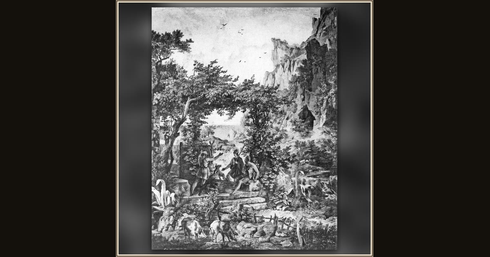

Telemachus Arrives at the Hut of Eumaeus (Bei Eumaios)
Friedrich Preller the Elder · 1830s · Römisches Haus (Villa of Hermann Härtel) · Leipzig, Germany
At the end of Book XV, Telemachus reaches Eumaeus's farmstead (15.555–557). Preller shows the welcome that follows as Book XVI opens: Eumaeus runs to meet him while Odysseus, still disguised, watches (16.11–21). Explore its place in Book XV of the Odyssey.